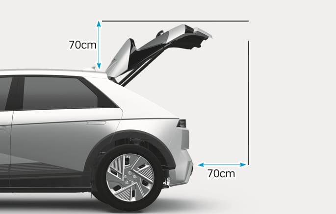
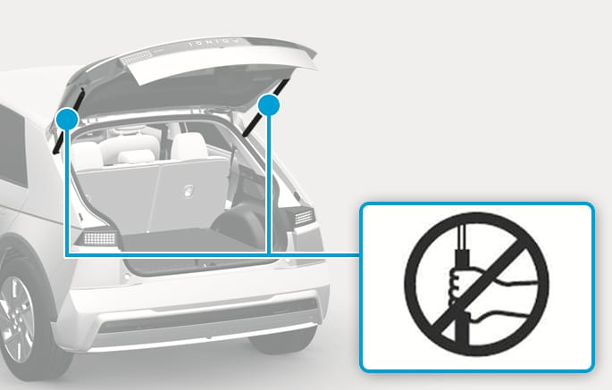

파워 테일게이트 사용하기
차량의 시동이 'ON'이고 변속기 위치가 'P'(주차)일 때, 또는 시동 'OFF' 상태에서 파워 테일게이트를 작동할 수 있습니다.
-
변속기 위치가 'P'(주차)일 때 파워 테일게이트를 작동하십시오.
-
차량이 3 km/h 이상의 속도로 이동하는 중에는 파워 테일게이트를 열 수 없습니다.
-
차 안에 어린이나 애완동물만 남겨 두고 차량을 떠나지 마십시오. 실수로 파워 테일게이트를 작동하는 경우 주변 사람이 부상을 입거나 차량이 손상될 수 있습니다.
-
테일게이트를 안전하게 열거나 닫을 수 있도록 차량 주변에 최소 여유 공간을 확보하십시오. 최소 공간이 확보되지 않은 상태로 테일게이트를 작동하면 테일게이트가 주변의 벽, 천장, 차랑 등에 부딪혀 손상될 수 있으며, 주변 사람에게 부상을 입힐 수도 있습니다.

2C_TailgateSpace
-
파워 테일게이트가 정상적으로 작동하지 않아 수동으로 작동해야 하는 경우 무리한 힘을 가하지 마십시오. 파워 테일게이트가 손상될 수 있습니다.
-
시동이 꺼진 상태에서 파워 테일게이트를 10회 이상 작동하면 배터리가 방전될 수 있습니다. 파워 테일게이트를 반복해서 작동해야 하는 경우 차량의 시동을 건 상태로 유지하십시오.
-
파워 테일게이트를 장시간 열어 둔 경우 파워 테일게이트가 작동하지 않을 수 있습니다. 파워 테일게이트가 작동하지 않는 경우 수동으로 천천히 내린 후 완전히 닫으십시오.
-
파워 테일게이트가 작동할 때 테일게이트에 무리한 힘을 가하지 마십시오. 테일게이트가 손상될 수 있습니다.
-
테일게이트를 지지하는 부품을 잡지 마십시오. 부품이 변형되어 차량이 파손되거나 안전사고가 발생할 수 있습니다.

2C_GasLift
-
파워 테일게이트와 관련된 부품을 임의로 개조하거나 수리하지 마십시오. 문제가 발생한 경우 당사 직영 하이테크센터나 블루핸즈에서 파워 테일게이트를 점검하십시오.
-
다음과 같은 경우 파워 테일게이트를 작동하지 마십시오. 파워 테일게이트가 정상적으로 작동하지 않을 수 있습니다.
-
타이어를 교체하거나 차량을 점검할 때 잭을 사용해 차량의 한쪽 바퀴를 들어 올린 경우
-
경사지, 보도 블록 등 고르지 않은 길에 차량을 기울게 주차한 경우
-
-
자동 세차장 이용 시 테일게이트를 완전히 닫은 후 중앙 도어 잠금 버튼을 눌러 모든 도어를 잠그십시오.
-
고압 세차 시 수압으로 인해 파워 테일게이트 열림/닫힘 버튼이 눌리지 않도록 주의하십시오.
-
테일게이트가 완전히 닫히지 않은 상태에서 3 km/h 이상의 속도로 주행하면 경보음이 10회 울립니다. 경보가 발생한 경우, 즉시 안전한 곳으로 이동해 정차한 후 테일게이트를 완전히 닫고, 클러스터에 테일게이트 열림 경고등이 꺼져 있는지 확인하십시오.
-
겨울에는 테일게이트 외부의 열림/닫힘 버튼 주변이 얼어 버튼이 눌리지 않을 수 있습니다. 이런 경우, 버튼 주변의 얼음을 제거한 후 버튼을 누르십시오. 또는, 스마트 키의 파워 테일게이트 열림/닫힘 버튼이나 실내의 파워 테일게이트 열림/닫힘 버튼을 사용해 테일게이트를 여십시오.
-
파워 테일게이트를 연속으로 5회 이상 작동하면 구동 모터 과열을 방지하기 위해 차량이 과열 방지 모드로 진입합니다. 이런 경우, 작동 버튼을 눌러도 파워 테일게이트가 작동하지 않으며, 경보음이 3회 울립니다. 과열 방지 모드 진입 후 1분이 지나 과열 방지 모드가 해제되면 파워 테일게이트를 다시 작동하십시오.